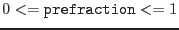
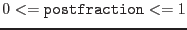

| Parameter | Mand | Type | Default | Constraints |
| instrument | yes | string | emos1 | xmm emos1emos2epnrgs1rgs2om emos1emos2epnrgs1rgs2om |
This determines the instrument for which the GTI data set is
to be generated.
|
| withparameters | no | boolean | false | truefalse |
A boolean switch determining whether the list of to be considered
HK parameters shall be explicitly specified with parameter
parameters. If set to false, all parameters for which entries
exists in the CCF file HKParmInt are considered in the
GTI data set generation.
|
| parameters | no | string list | ``'' | blank
separated list of HK parameter names |
If withparameters is set to true only the HK
parameters given in the list will be considered in the
generation of the final GTI data set. The parameter names must
be given in their
long form.
|
| except | no | boolean | false | truefalse |
If set to true and withparameters is set to true
all HK parameters for which there are entries in the CCF file
HKParmInt are considered in the GTI set generation except for those
explicitly listed in parameters.
|
| withoverrideparameters | no | boolean | false | truefalse |
If set to true overrideparameters must contain a
list of HK parameter names and overrideparametervalues a
corresponding list of validity ranges for those parameters (see below).
|
| overrideparameters | no | string list | ``'' | blank
separated list of HK parameter names |
If withoverrideparameters is set to true the list must
contain valid HK parameter names. For each parameter there must
be a corresponding value (i.e., validity range expression) specified in
parameter overrideparametervalues. This value replaces
the one from the CCF HKParmInt constituent for that HK parameter
if an entry exists at all. Otherwise the value simply supplements
the other validity ranges assembled so far. The parameter names must
be given in their long form.
If supplemental parameter names are to be given for which no long
names are defined in the CCF constituent HKParmInt the corresponding
short names can be used instead.
|
| overrideparametervalues | no | string list | ``'' | ;-separated list of validity range expressions |
This is the list of validity range expressions corresponding to the
parameter names in overrideparameters. List items must be
separated with the character ';' and each item must be a valid
boolean selection expression as detailed in the documentation of
package selectlib. The expression
may contain the character '@' which will get replaced with
the name of the corresponding HK parameter.
|
| withgtiset | no | boolean | true | truefalse |
Boolean switch determining whether or not a GTI set should be generated.
If set to false, for each exposure and applicable periodic
HK file hkgtigen
will print on stdout the command line
with which tabgtigen
will be invoked.
|
| gtiset | no | string | gti.ds | name of non-existing data set |
The name of the GTI data set to create.
|
| timecolumn | no | string | TIME | name of existing column in HK file |
Duplicates the parameter with the same name of task
tabgtigen
|
| prefraction | no | real | 0.5 |
 |
Duplicates the parameter with the same name of task
tabgtigen
|
| postfraction | no | real | 0.5 |
 |
Duplicates the parameter with the same name of task
tabgtigen
|
| diagnosticmode | no | boolean | false | truefalse |
If set to true the task's
diagnostic mode is entered.
|
| diagfile | no | string | STDOUT | |
The name of the ASCII diagnostic file to be generated in
diagnostic mode. The special value STDOUT is recognized
as the standard output channel.
|
| plotgtis | no | boolean | false | truefalse |
If set to true dsplot
is invoked at the end to visualize
the individual GTIs together with the total ones.
|
| Parameter | Mand | Type | Default | Constraints |